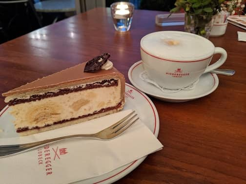

..
Germany Trip
Dec 18, 2019 - Jan 11, 2020. Our first multi-week trip together. 3.5 weeks in Germany. I felt like a little girl in a candy store. Every day there was like living in a fairy tale world.
We stayed at Berlin, Lubeck and Wernigerode and visited many small towns in between.
I loved the Christmas markets, eating cakes and drinking coffees, and just admiring the fairytale like buildings. I didn’t even mind the cold so much, although Berlin is cold.
Christmas market in Bremen
 Turkish Street market in Berlin where we had Salep, a yummy hot milky drink
Turkish Street market in Berlin where we had Salep, a yummy hot milky drink
Wernigerode
Wernigerode
Hildesheim
Had fun exploring alleys with you in Lubeck
Lubeck
 My favorite thing to do in Germany, coffee and cake
 Our favorite restaurant meal this trip, Lubeck
Our favorite restaurant meal this trip, Lubeck